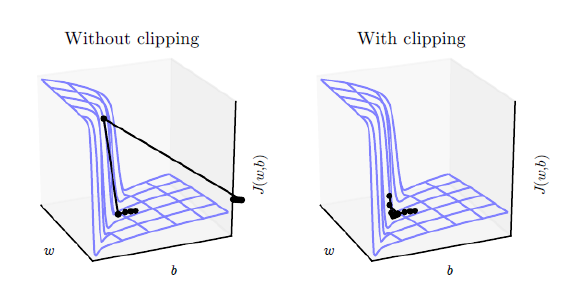

闲聊机器人的优化
目标
- 知道如何优化模型的效果
- 知道常见的优化手段
1. seq2seq中使用teacher forcing
在前面的seq2seq的案例中，我们介绍了teacher frocing是什么，当时我们的输入和输出很相似，所以当时我们的teacher forcing是在每个time step中实现的，那么现在我们的输入和输出不同的情况下，该如何使用呢？
我们可以在每个batch遍历time step的外层使用teacher forcing
代码如下：
use_teacher_forcing = random.random() > 0.5
if use_teacher_forcing: #使用teacher forcing
for t in range(config.max_len):
decoder_output_t, decoder_hidden, decoder_attn_t = self.forward_step(decoder_input, decoder_hidden,
encoder_outputs)
decoder_outputs[:, t, :] = decoder_output_t
#使用正确的输出作为下一步的输入
decoder_input = target[:, t].unsqueeze(1) # [batch_size,1]
else:#不适用teacher forcing，使用预测的输出作为下一步的输入
for t in range(config.max_len):
decoder_output_t ,decoder_hidden,decoder_attn_t = self.forward_step(decoder_input,decoder_hidden,encoder_outputs)
decoder_outputs[:,t,:] = decoder_output_t
value, index = torch.topk(decoder_output_t, 1) # index [batch_size,1]
decoder_input = index
2. 使用梯度裁剪
前面，我们给大家介绍了梯度消失(梯度过小，在多层计算后导致其值太小而无法计算)和梯度爆炸（梯度过大，导致其值在多层的计算后太大而无法计算）。
在常见的深度神经网络中，特别是RNN中，我们经常会使用梯度裁剪的手段，来抑制过大的梯度，能够有效防止梯度爆炸。
梯度裁剪的实现非常简单，仅仅只需要设置一个阈值，把梯度大于该阈值时设置为该阈值。

实现代码：
loss.backward()
#进行梯度裁剪
nn.utils.clip_grad_norm_(model.parameters(),[5,10,15])
optimizer.step()
3. 其他优化方法
- 根据特定的问题，使用分类模型进行训练，然后再训练单独的回个该为题的为模型
- 比如询问名字，可以使用fasttext先进行意图识别，命中
询问名字分类后，直接返回名字 - 或者是手动构造和名字相关的很多问题，来进行训练，从而能够更加个性化的回答出结果
- 比如询问名字，可以使用fasttext先进行意图识别，命中
- 直接对现有的语料进行修改和清洗，把语料中更多的答案进行替换，比如咨询名字的，咨询天气的等，这样能够更大程度上的回答出更加规范的答案
- 使用2.4 会讲的搜索模型，不再使用这种生成模型